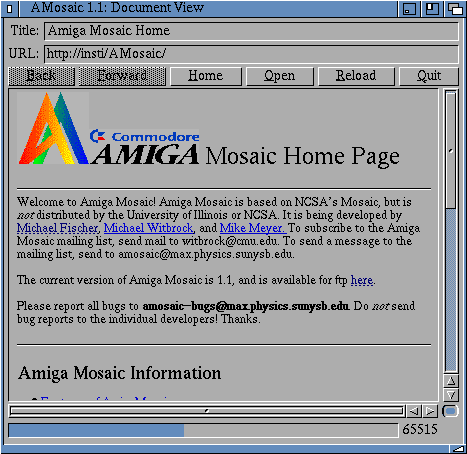
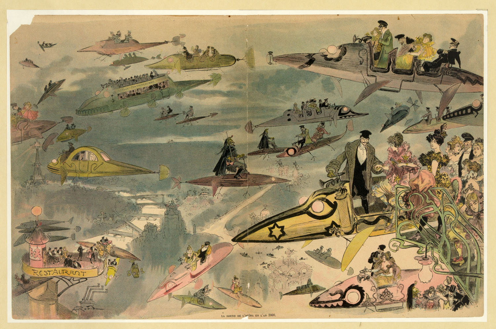
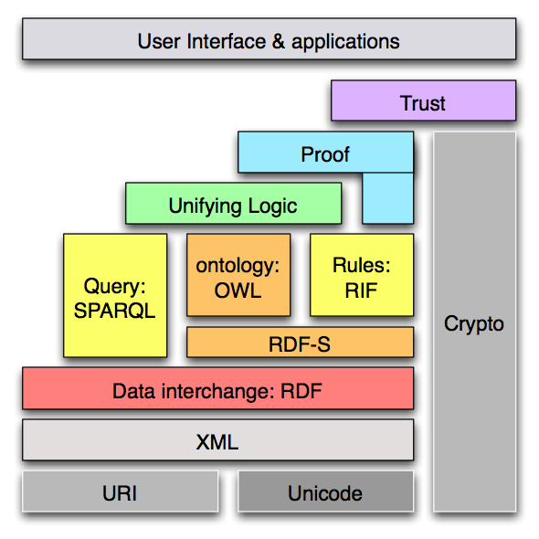
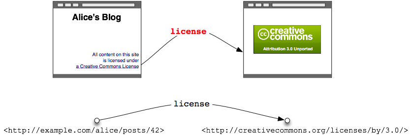

Martín Álvarez-Espinar (W3C Oficina España – CTIC)
Encuentro Iberoamericano de Ciudades Digitales – Bilbao

Especificaciones, directrices y herramientas:
Voice WebCGM PICS HTMLTidy Databinding WebOntology HTML CompoundDocumentFormats SPARQL WAI Web APIs Libwww PatentPolicy OWL TimedText XMLEncryption Multimodal XML RichWebClients XMLProcessing DeviceIndependence URI/URL DOM HTTP Accessibility RDF WebApplicationFormats XMLBase Jigsaw XLink I18N P3P QualityAssurance XMLKeyManagement UbiquitousWeb InkML Incubator XPath WebServices XForms CSS SOAP Mobile SMIL Rules SVG Amaya SemanticWeb MathML
Recomendaciones tecnológicas abiertas del W3C, probablemente con la política de patentes más transparente en Internet



Una Web para navegar
...Experiencia de usuario “pasiva”
Una Web para interactuar
...Experiencia de usuario “interactiva”
Mejorando la Plataforma Web

Albert Robida, 1882Una web como base del conocimiento
(AKA Web Semántica)
Usar los datos en la Web de la misma forma que los documentos:


Mejorando la Plataforma Web
Modelando la interfaz de usuario para mejorar la interacción

text/html) yapplication/xhtml+xml)
<input type='range' min='3' max='18' />
<input type='search' placeholder="Busca aquí">
<input type='tel' >
<input type='url' >
<input type='email' >
<input type='date' >
<input type='time' >
<input type='color' >
<input type='number' >
Dotar de semántica los documentos

<body>
<header>
<hgroup>
<h1>W3C</h1>
<h2>Llevando la Web a
su máximo potencial</h2>
</hgroup>
<nav>
<ul>
Menú de navegación…
</ul>
</nav>
</header>
<section>
<article>
<h1>El W3C participa…</h1>
<section>
Contenido…
</section>
</article>
<article>
<header>
<h1>Título</h1>
</header>
<section>
<figure>
<img src='…' alt='…'>
<figcaption>Ilustración…</figcaption>
</figure>
</section>
</article>
</section>
<aside>
Enlaces superiores
</aside>
<footer>
Copyright…
</footer>
</body>
Representación e integración de datos en la Web
<div itemscope> <p>Nombre: <span itemprop="name">John</span></p> <p>Banda: <span itemprop="band" itemscope> <span itemprop="name">Los Grandes del Jazz</span> (<span itemprop="size">12</span> integrantes) </span> </p> </div>
<p typeof="foaf:Person" xmlns:foaf="http://xmlns.com/foaf/0.1/"> Nombre: <em property="foaf:name">John</em> y... </p>
Ahora el navegador sí lo entiende

<video>
<video src='myMovie' id='vid' />
var vid = document.getElementById("vid");
vid.play();
vid.pause();
vid.currentTime = 0;
Párrafo en HTML sobre el vídeo
La opacidad de CSS permite al vídeo ser transparente parcialmente.
Pasa el ratón por encima de vid.play() para controlar (arrancar/pausar/detener) el vídeo [http://www.polycrystal.org/lego/movies.html].
<canvas>
// canvas es una referencia a un elemento de tipo <canvas>
var context = canvas.getContext('2d');
context.fillRect(0,0,50,50);
canvas.setAttribute('width', '300'); // limpia el canvas
context.fillRect(100,0,50,50); // sólo permanece éste ...
// ... rectángulo
<canvas> + <video><p contenteditable='true'> <table contenteditable='true'>
Esto es un párrafo.
| Date | Description | Transfer |
|---|---|---|
| 10/08/2004 | Restaurant | Expenses:Foods |
| 10/10/2004 | Market | Expenses:Groceries |
| 10/11/2004 | Gas | Expenses:Car |
| 10/12/2004 | Payroll | Income:Salary |
| Date | Description | Transfer | Deposit | Withdrawal | Balance |
|---|---|---|---|---|---|
| 10/08/2004 | Restaurant | Expenses:Foods | 38.14 | 440.67 | |
| 10/10/2004 | Market | Expenses:Groceries | 123.14 | 317.53 | |
| 10/11/2004 | Gas | Expenses:Car | 40.00 | 277.53 | |
| 10/12/2004 | Payroll | Income:Salary | 2,000.00 | 2277.53 | |
| 10/12/2004 | Home depot | Expenses:House Supplies | 41.14 | 2236.39 | |
| 10/14/2004 | Dentist | Expenses:Medical | 166.20 | 2070.19 | |
| 10/15/2004 | Electricity | Expenses:Utilities | 27.88 | 2042.31 | |
| 10/16/2004 | Filene's Basement | Expenses:Grooming | 31.93 | 2010.38 |

border-image: url("img/border.png") 27 round stretch;
En un lugar de la Mancha, de cuyo nombre no quiero acordarme, no ha mucho que vivía un hidalgo de los de lanza en astillero, adarga antigua, rocín flaco y galgo corredor. Una olla algo más de vaca que carnero, salpicón las más noches, duelos y quebrantos los sábados, lentejas los viernes y algún palomino de añadidura los domingos, consumían tres partes de su hacienda.
(Don Quijote de La Mancha. Primera parte)
@font-face {
font-family: 'Pretty';
src: url('Pretty.woff') format('woff') url('Pretty.eot') format('eot'); }
En un lugar de la Mancha, de cuyo nombre no quiero acordarme, no ha mucho que vivía un hidalgo de los de lanza en astillero, adarga antigua, rocín flaco y galgo corredor. Una olla algo más de vaca que carnero, salpicón las
más noches, duelos y quebrantos los sábados, lentejas los viernes y algún palomino de añadidura los domingos, consumían tres partes de su hacienda.
(Don Quijote de La Mancha. Primera parte)
Ofrece un formato de fuente común para los navegadores Web
<math>
<mrow>
<munderover>
<mo>∑</mo>
<mrow><mi>i</mrow>
<mi>p</mi>
</munderover>
<msub>
<mi>a</mi>
<mrow>
<mi>i</mi>
<mi>j</mi>
</mrow>
</msub>
<msub>
<mi>b</mi>
<mrow>
<mi>j</mi>
<mi>k</mi>
</mrow>
</msub>
</mrow>
</math>
Todo comenzó con DOM Level 0. Entonces, el W3C creó DOM Level 1 y …
window.localStorage['valor'] = "valor a almacenar"; p.textContent = window.localStorage['valor'];
p.textContent = window.sessionStorage['valor'];
Timestamp: [sin valor]
Contador: [contador]
http://www.w3.org/TR/geolocation-API
function showMap(position) {
// Muestra un mapa centrado en:
// - position.coords.latitude
// - position.coords.longitude
}
// Petición de posicionamiento
navigator.geolocation.getCurrentPosition(showMap);
No está restringido a dispositivos móviles
http://www.flickr.com/photos/viskas/3486495936/


{kind=link}
{kind=link}